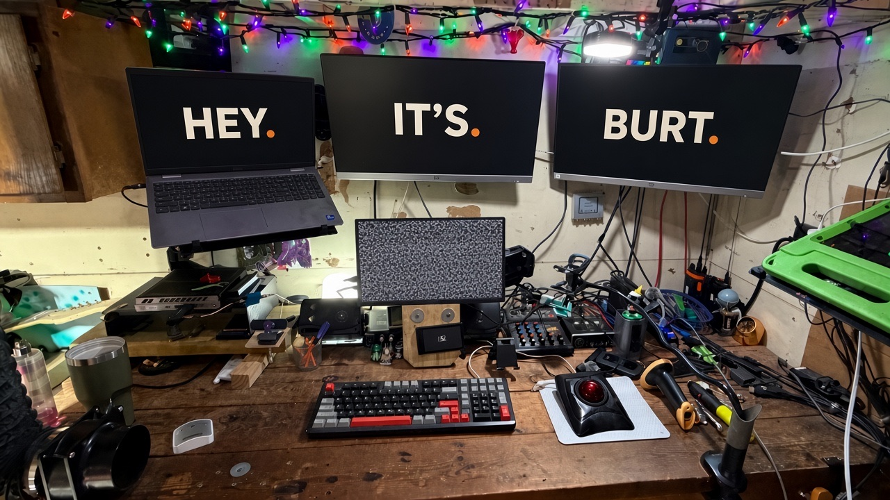

DFW Listening Post Dallas–Fort Worth · Ellis County
On the bench — garage lab, radios, listening post HUD
HEY.
IT'S
BURT.
I break things to understand them, build things to prove I can, and share everything along the way. From servers in my garage to signals in the air — if it runs on power and curiosity, I'm in. Need a computer fixed in Ellis County? That's the garage lab too: services.burtlabs.org.
About

I'm Joseph Burt — a builder based in the DFW area who treats the garage like a workshop and the workshop like a lab. Servers on the shelf, radios on the bench, and too many single-board computers doing jobs they were never designed for.
Most of what I do lives at the intersection of hardware, software, and curiosity. I self-host because I want to understand the stack. I stream because building in public keeps me honest. I chase signals because there's something satisfying about making contact without asking permission first.
If there's a through-line, it's simple: learn it, break it, rebuild it, share it. This site is where those threads come together — projects, experiments, streams, and whatever I'm obsessing over this week.
When someone nearby needs a machine diagnosed or brought back, that work lives at Burt Labs — computer repair and local tech help for Ellis County, including Palmer, Waxahachie, and nearby.
Projects
GROK NES
PlayIn-browser NES emulator — drop in a .nes ROM and play it on this site.
LivePBRE
TypeScriptPuffing Bluetooth Re-Engineered — open source web app to control Pax 3 vaporizers.
LiveBurt Labs
HTMLComputer repair and support for Ellis County, Texas — Palmer, Waxahachie, and nearby. Request service at services.burtlabs.org.
LiveLatest Videos
Simulcast
Catch the content live.
Streaming, building, and figuring it out in public — simulcast on YouTube and X at the same time.